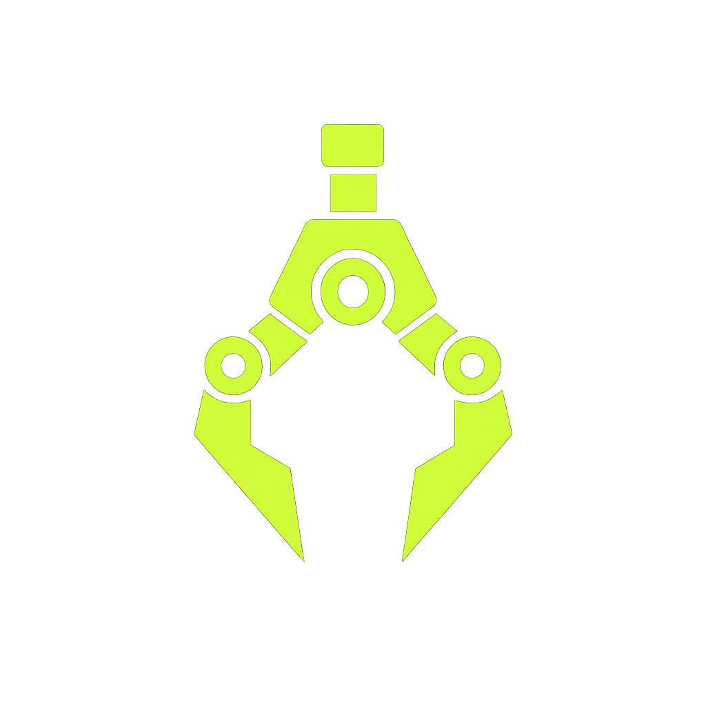

Your open-source intelligent browser automation agent. Record macros, parse the DOM, and let AI automate the web.
First, you must sign in to use the features. The sign in should be done on the website itself.
Open DashboardFinally, add your API keys (OpenAI, Anthropic, or OpenRouter) on the dashboard so they can be utilized by the tool.